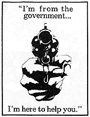

| D O C U M E N T S
|
"A Prohibition law strikes a blow at the very principles upon which our government was founded." —Abraham Lincoln
No civilized nation makes war on its own citizens
Drug War Truce with Peace Negotiations |
"Eventually the right to determine our own food and drug preferences will be seen as a natural consequence of human dignity, as long as it is done in a way that does not limit the rights of others."
—Terence McKenna
|
- Statements commonly attributed to God.
- Manna From Heaven
— curious references to a spiritual food sent down from heaven by God
- Plan, Plant, Planet proposes that we adopt the plant as the organizational model for life in the twenty-first century, just as the computer of the late twentieth century, and the steam engine of the nineteenth century served as previous organizational models.
- The Illegal Search For Self-Awareness — How is it that the leaders of our society have seen fit to try to eliminate this one very important means of learning and self-discovery, this means which has been used, respected, and honored for thousands of years, in every human culture of which we have a record?
- Psychedelics and Religious Experience — The undoubted mystical and religious intent of most users of the psychedelics, even if some of these substances should be proved injurious to physical health, requires that their free and responsible use be exempt from legal restraint in any republic that maintains a constitutional separation of church and state.
- Liberty and the Pursuit of Forbidden Fruit — The desire to recreationally ingest psychoactive drugs is deeply rooted in our biological nature. The hunger to get high is as natural as the desire to eat, sleep, and procreate. This is why the War on Drugs in America is really a war
against human nature.
- The Reunification of the Sacred and Natural — The relentless exploitation and destruction of the biosphere by the capitalist-industrial growth machine around the globe is rooted in a pathological domination complex of "civilized" humans toward the natural world. The revival of interest in animistic worldviews and in the shamanic practices of traditional peoples, including the intentional use of hallucinogenic sacraments, is among the hopeful signs that the split between the sacred and the natural can be healed again.
- Dischord: Strange Days — The social logic for the prohibition of drugs is not a public-health logic, but a truly religious logic, a logic of hatred towards the pleasure and experiences they bring or are said to bring. Drugs are really reproached with opening doors leading to artificial paradises.
"At one point consciousness-altering devices like the microscope and telescope were criminalized for exactly the same reasons that psychedelic plants were banned in later years. They allow us to peer into bits and zones of Chaos."—Timothy Leary
|
|
What No One Wants To Know About Marijuana
Life, Liberty, and the Pursuit of Cannabis
Positive LSD Story
|
This can be said about depressed people on antidepressants, anxiety people on their medication and impotent people on Viagra. What's the point of being "drug-free" if you can't enjoy life without drugs?
Internationally, "the war on drugs" provides a cover for intervention. Domestically, it has little to do with drugs but a lot to do with distracting the population, increasing repression in the inner cities, and building support for the attack on civil liberties. —Noam Chomsky, "The war on (certain) drugs" in What Uncle Sam Really Wants
The Painted Bird —A Perfect Symbol of the Scapegoat
Ain't Nobody's Business If You Do
The Absurdity of Consensual Crimes in Our Free Country
Whenever you hear anyone sounding off on internal freedom and conciousness-expanding
foods and drugs, whether pro or con, check out these questions: How to Handle Doubters
Prohibition Never Ended—How the 21st Amendment to the U.S. Constitution replaced one form of
"intoxicating liquor" prohibition with another.
When Drug Use In Sports Was Not Cheating—Drugs were considered acceptable food for athletes
before the 1920s, which happens to be the decade of alcohol prohibition in the United States.
PRINCIPLES OF RESPONSIBLE USE
Conduct which we believe any responsible adult should follow
|
| 
"Drugs" is a word that's been used by governments to make it impossible to
think creatively about the problem of substances and abuse and availability and so forth and so
on.
—DRUGS
|
The Government's idea of how to help people who use drugs is to break into their homes and terrorize
them with guns. They want to help them by forcing them to obey the established government religion
which they say is based on science. Fredric Madeleine, The
Drug Controversy and the Rise of Antichrist
The Partnership's position on
Children and Drugs
"Teenagers find illegal marijuana easier to obtain than legally regulated beer." Kendra E. Wright, Director, Family Watch
Kids and Psychedelics—Raising children to have a healthy spiritual
attitude about entheogens in a hostile Drug War climate is challenging, but I think a few general conclusions can be drawn from our
experience. Rev. Anne Zapf, Parenting
the Peyote Way
Keeping Kids Off Drugs
Alternatives to Waging War
|
People use the word "natural"... What is natural to me is these botanical species which interact directly with the nervous system.
What I consider artificial is 4 years at Harvard, and the Bible, and Saint Patrick's cathedral, and the sunday school
teachings.—Tim Leary
|
|
N E T W O R K R E S O U R C E S
|
- The Alchemind Society is an international nonprofit association of people working in the public interest to protect the fundamental right to freedom of the mind.
- Schaffer Library of Drug Policy - contents
- The United Nations
- The Lindesmith Center
- The Multidisciplinary Association for Psychedelic Studies
- Drug Reform Coordination Network
- Media Awareness Project
- Drugwar.com
- Marijuana, official from 1850 to 1942 in the U.S. Pharmacopeia, were it legal today, would be approved for glaucoma, high
blood pressure, migraine, anorexia, depression, sleep disorders, multiple sclerosis, spasticity disorders, chronic pain, AIDS
wasting syndrome, asthma, motion sickness, depression, mood disorders, pruritis, menstrual cramps, the effects of cancer
chemotherapy and epilepsy. This list, by the way, comes mostly from the official position paper of The American Public Health
Association, written exclusively by experienced physicians. Fake Science
- Ethnic cleansing is a bit trickier in South Central Los Angeles than it is in South Central Europe. It is essential in a
“democracy” to have people do it in a way that makes it look like they're "doing it" to themselves. You need a socially induced
suicide. Ethnic Cleansing in
the USA
- According to the U.N. Drug Control Program, the biggest heroin and cocaine trading institutions in the world are the Burmese,
Pakistani, Mexican, Peruvian and Colombian militaries—all armed and trained by U.S. military intelligence—in the name of
the anti-drug effort, of course. Funny how all that effort never has any strategic effect. Neocolonialism
- We firmly agree with Thomas Jefferson that a well informed public will almost invariably come to the right conclusion. You and
I both know what the problem with that equation is. Let's consider some examples about how well—by design—you have NOT
been informed: Why It Is Time
To Decriminalize Drug Use
- Salon
- In Drugs We Trust
Why do Americans make war on some drugs and build fortunes on others?
- More
|
|
Superintendent of the New Jersey State Police reveals
the racist nature of the war on some drugs. |
I have sworn upon the altar of God eternal hostility against
every form of tyranny over the mind of man.
Thomas Jefferson
|
|
|